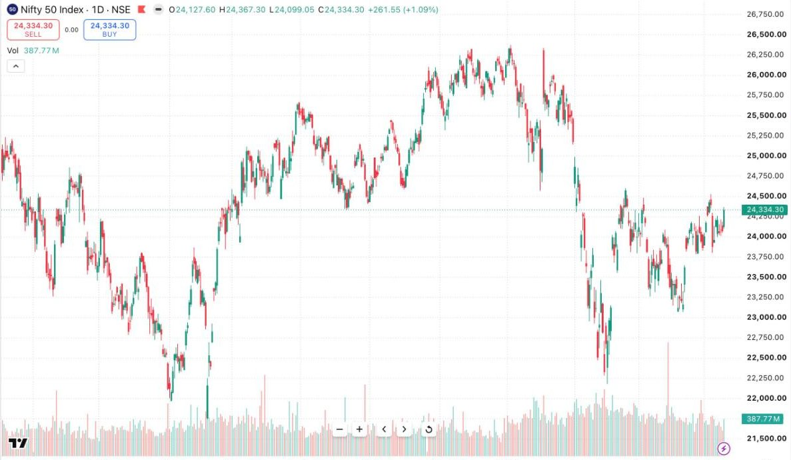

How Markets Actually Work
Before you learn a single chart pattern, you need to answer a question most traders never ask: when I buy, who is selling to me — and why?
Every trade has two sides. If you bought a stock at ₹500 hoping it goes up, somebody sold it to you at ₹500 — and they had a reason. Maybe they think it's going down. Maybe they're a fund locking in profit after a two-year hold. Maybe they're a market maker who will hedge the position seconds later and doesn't care about direction at all. The market is not a machine that pays out for good analysis. It is an auction where participants with different goals, timeframes and information meet at one price.
Price is a negotiation, not a verdict
At any moment, a stock's price is simply the last price where a buyer and a seller agreed. That's all. It is not what the company is "worth" — it's the current settlement of a continuous argument between everyone trading it.
Price moves when that argument tips. If buyers become more aggressive — willing to pay up to get filled — price rises until enough sellers are tempted in to meet them. If sellers become desperate, price falls until buyers see value. The engine of every move you'll ever trade is this imbalance between urgent buyers and urgent sellers. Indicators don't move price. News doesn't move price directly. People and algorithms reacting with orders move price.
The players around your trade
- Institutions — mutual funds, insurance companies, FIIs. They move enormous size, which means they cannot enter or exit in one order. Their footprints (accumulation, distribution) create many of the structures you'll learn to read later.
- Proprietary desks & algorithms — trading firms running strategies from microseconds to days. They provide much of the volume you trade against.
- Market makers — quote both sides, earn the spread, hedge constantly. They are why you can buy instantly at 10:47 AM without waiting for a human seller.
- Hedgers — businesses and investors using futures and options to reduce risk, not to speculate. They will happily take the opposite side of your trade for reasons that have nothing to do with direction.
- Retail traders — you. Small size, fast execution, no committee meetings. Your only edges are selectivity and discipline; you cannot out-muscle or out-inform the others.
Why the market seems "irrational"
Beginners say the market is rigged when a stock falls on good results. But remember the auction: if everyone expected great results, buyers were already positioned before the announcement. When the news arrives, there is nobody left to buy — and early buyers start selling to take profit. Price falls on "good" news because markets trade on surprise, not on facts. What looked irrational was actually the most rational thing in the world: positioning unwinding.

KEY TAKEAWAYS
- Every trade has a counterparty with their own reason — often a different timeframe than yours.
- Price is where the auction currently balances; it moves on urgency imbalance.
- Markets price in expectations ahead of events; they move on the gap between expectation and reality.
- Retail's edge is selectivity and discipline — not speed, size or information.
PRACTICE THIS WEEK
Pick one liquid stock. Each evening, look at the day's move and write one sentence: "Who was likely more urgent today — buyers or sellers — and what might have made them urgent?" No indicators, no predictions. You are training yourself to think in auctions.
Want this taught live, with your doubts answered?
Market Foundations — our beginner program — covers all of this with live sessions and a structured plan.
Request Program Details